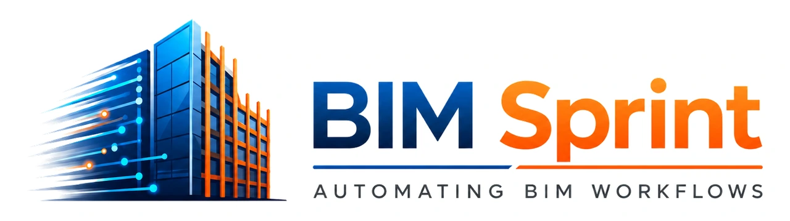

Save production time
Reduce repeated clicks, manual placement, and navigation across large Revit projects.
BIM Sprint focuses on Revit add-ins, custom BIM automation, engineering software, and BIM delivery services that solve real production problems.

Automation should give engineers more time for coordination, design decisions, quality control, and project delivery. BIM Sprint builds focused tools that standardize repeatable steps while keeping users in control of the workflow.
Reduce repeated clicks, manual placement, and navigation across large Revit projects.
Encode agreed rules, naming, selection, and placement logic into repeatable processes.
Bring CAD, Revit parameters, model elements, and engineering data into practical tools.
Pair software delivery with documentation, setup guidance, and continued improvement.
Sixteen focused Revit add-ins across reinforcement, CAD-to-Revit modeling, room finishes, parameters, QA/QC, and productivity.
Browse ready add-insTailored Revit API and engineering software solutions designed around the client’s actual workflow and standards.
Explore custom developmentStructural and architectural modeling, shop drawings, reinforcement details, schedules, and coordination-ready outputs.
Explore BIM servicesThe problem, users, inputs, and expected output come before interface design or code.
Clear previews, summaries, validation, and user control are built into the experience where needed.
Compatibility, licensing, documentation, error handling, and support are part of the product—not an afterthought.